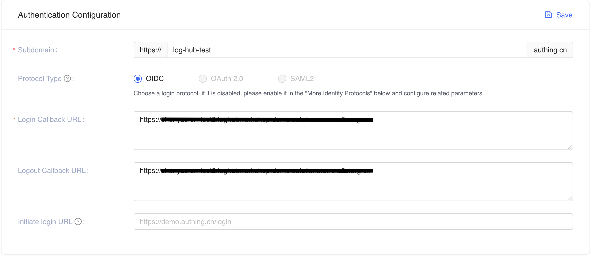

Launch with OpenID Connect (OIDC)
Time to deploy: Approximately 30 minutes
Prerequisites
Important
The Log Hub console is served via CloudFront distribution which is considered as an Internet information service. If you are deploying the solution in AWS China Regions, the domain must have a valid ICP Recordal.
- A domain. You will use this domain to access the Log Hub console.
- An SSL certificate in AWS IAM. The SSL must be associated with the given domain. Follow this guide to upload SSL certificate to IAM.
Deployment Overview
Use the following steps to deploy this solution on AWS.
Step 4. Launch the web console
Step 1. Create OIDC client
You can use different kinds of OpenID Connector (OIDC) providers. This section introduces Option 1 to Option 4.
- (Option 1) Using Amazon Cognito from another region as OIDC provider.
- (Option 2) Authing, which is an example of a third-party authentication provider.
- (Option 3) Keycloak, which is a solution maintained by AWS and can serve as an authentication identity provider.
- (Option 4) ADFS, which is a service offered by Microsoft.
- (Option 5) Other third-party authentication platforms such as Auth0.
Follow the steps below to create an OIDC client, and obtain the client_id and issuer.
(Option 1) Using Cognito User Pool from another region
You can leverage the Cognito User Pool in a supported AWS Standard Region as the OIDC provider.
- Go to the Amazon Cognito console in an AWS Standard Region.
- Set up the hosted UI with the Amazon Cognito console based on this guide.
- Note that there is a new UX design for the Amazon Cognito console.
If you are using the new UX of Amazon Cognito console, make sure you are following the instruction of New console. Moreover,
- For New Amazon Cognito Console: make sure that Public client is chosen when selecting the App type.
- For Original Amazon Cognito Console: make sure that the option Generate client secret is unchecked when adding an app client. It is checked by default.
- Enter the Callback URL and Sign out URL using your domain name for Log Hub console.
If your hosted UI is set up, you should be able to see something like below:
- For New Amazon Cognito Console, the hosted UI is Available:

- For Original Amazon Cognito Console, the Launch Hosted UI link is available:

- For New Amazon Cognito Console, the hosted UI is Available:
- Save the App client ID, User pool ID and the AWS Region to a file, which will be used later.
- For New Amazon Cognito Console:


- For Original Amazon Cognito Console:


- For New Amazon Cognito Console:
In Step 2. Launch the stack, the OidcClientID is the App client ID, and OidcProvider is https://cognito-idp.${REGION}.amazonaws.com/${USER_POOL_ID}.
(Option 2) Authing.cn OIDC client
- Go to the Authing console.
- Create a user pool if you don't have one.
- Select the user pool.
- On the left navigation bar, select Self-built App under Applications.
- Click the Create button.
- Enter the Application Name, and Subdomain.
-
Save the
App ID(that is,client_id) andIssuerto a text file from Endpoint Information, which will be used later.
-
Update the
Login Callback URLandLogout Callback URLto your IPC recorded domain name.  -
Set the Authorization Configuration.

{kind=link}
You have successfully created an authing self-built application.
(Option 3) Keycloak OIDC client
-
Deploy the Keycloak solution in AWS China Regions following this guide.
-
Make sure you can log in to the Keycloak console.
-
On the left navigation bar, select Add realm. Skip this step if you already have a realm.
-
Go to the realm setting page. Choose Endpoints, and then OpenID Endpoint Configuration from the list.

-
In the JSON file that opens up in your browser, record the issuer value which will be used later.

-
Go back to Keycloak console and select Clients on the left navigation bar, and choose Create.
- Enter a Client ID, which must contain 24 letters (case-insensitive) or numbers. Record the Client ID which will be used later.
-
Change client settings. Enter
https://<Log Hub Console domain>in Valid Redirect URIs，and enter*and+in Web Origins, as shown below. -
In the Advanced Settings, set the Access Token Lifespan to at least 5 minutes.
-
Select Users on the left navigation bar.
- Click Add user and enter Username.
- After the user is created, select Credentials, and enter Password.
{kind=link}
{kind=link}
The issuer value is https://<KEYCLOAK_DOMAIN_NAME>/auth/realms/<REALM_NAME>.
(Option 4) ADFS OpenID Connect Client
- Make sure your ADFS is installed. For information about how to install ADFS, refer to this guide.
-
Make sure you can log in to the ADFS Sign On page. The URL should be
https://adfs.domain.com/adfs/ls/idpinitiatedSignOn.aspx, and you need to replace adfs.domain.com with your real ADFS domain. -
Log on your Domain Controller, and open Active Directory Users and Computers.
-
Create a Security Group for Log Hub Users, and add your planned Log Hub users to this Security Group.
-
Log on to ADFS server, and open ADFS Management.
-
Right click Application Groups, click Application Group, and enter the name for the Application Group, such as LogHub. Select Web browser accessing a web application option under Client-Server Applications, and click Next.
-
Record the Client Identifier (
client_id) under Redirect URI, enter your Log Hub domain (for example,loghub.domain.com), and click Add, and then click Next. -
In the Choose Access Control Policy window, select Permit specific group, click parameters under Policy part, add the created Security Group in Step 4, then click Next. You can configure other access control policy based on your requirements.
-
Under Summary window, click Next, and click Close.
-
Open the Windows PowerShell on ADFS Server, and run the following commands to configure ADFS to allow CORS for your planned LogHub URL.
Set-AdfsResponseHeaders -EnableCORS $true Set-AdfsResponseHeaders -CORSTrustedOrigins https://<your-loghub-domain> -
Under Windows PowerShell on ADFS server, run the following command to get the Issuer (
issuer) of ADFS, which is similar tohttps://adfs.domain.com/adfs.Get-ADFSProperties | Select IdTokenIssuer
Step 2. Launch the stack
Important
You can only have one active Log Hub solution stack in one region of an AWS account. If your deployment failed (for example, not meeting the requirements in prerequisites), make sure you have deleted the failed stack before retrying the deployment.
-
Sign in to the AWS Management Console and use the button below to launch the
log-hubAWS CloudFormation template.Launch in AWS Console Launch with a new VPC in standard regions 
Launch with an existing VPC in standard regions Launch with a new VPC in China Regions Launch with an existing VPC in China Regions -
The template is launched in the default region after you log in to the console. To launch the Log Hub solution in a different AWS Region, use the Region selector in the console navigation bar.
- On the Create stack page, verify that the correct template URL shows in the Amazon S3 URL text box and choose Next.
- On the Specify stack details page, assign a name to your solution stack. For information about naming character limitations, refer to IAM and STS Limits in the AWS Identity and Access Management User Guide.
-
Under Parameters, review the parameters for the template and modify them as necessary.
- If you are launching the solution in a new VPC, this solution uses the following parameters:
Parameter Default Description OidcClientId <Requires input>OpenID Connector client Id. OidcProvider <Requires input>OpenID Connector provider issuer. The issuer must begin with https://Domain <Requires input>Custom domain for Log Hub console. Do NOT add http(s)prefix.IamCertificateID <Requires input>The ID of the SSL certificate in IAM. The ID is composed of 21 characters of capital letters and digits. Use the list-server-certificatescommand to retrieve the ID.- If you are launching the solution in an existing VPC, this solution uses the following parameters:
Parameter Default Description OidcClientId <Requires input>OpenID Connector client Id. OidcProvider <Requires input>OpenID Connector provider issuer. The issuer must begin with https://Domain <Requires input>Custom domain for Log Hub console. Do NOT add http(s)prefix.IamCertificateID <Requires input>The ID of the SSL certificate in IAM. The ID is composed of 21 characters of capital letters and digits. Use the list-server-certificatescommand to retrieve the ID.VPC ID <Requires input>Specify the existing VPC ID which you are launching the Log Hub solution in. Public Subnet IDs <Requires input>Specify the two public subnets in the selected VPC. The subnets must have routes point to an Internet Gateway. Private Subnet IDs <Requires input>Specify the two private subnets in the selected VPC. The subnets must have routes point to an NAT Gateway. -
Choose Next.
- On the Configure stack options page, choose Next.
- On the Review page, review and confirm the settings. Check the box acknowledging that the template creates AWS Identity and Access Management (IAM) resources.
- Choose Create stack to deploy the stack.
You can view the status of the stack in the AWS CloudFormation console in the Status column. You should receive a CREATE_COMPLETE status in approximately 15 minutes.
Step 3. Setup DNS Resolver
This solution provisions a CloudFront distribution that gives you access to the Log Hub console.
- Sign in to the AWS CloudFormation console.
- Select the solution's stack.
- Choose the Outputs tab.
- Obtain the WebConsoleUrl as the endpoint.
- Create a CNAME record in DNS resolver, which points to the endpoint address.
Step 4. Launch the web console
Important
You login credentials (username & password) is managed by the OIDC provider. Before signing in to the Log Hub console, make sure you have created at least one user in the OIDC provider's user pool.
- Use the previous assigned CNAME to open the OIDC Customer Domain URL using a web browser.
- Choose Sign in to Log Hub, and navigate to OIDC provider.
- Enter username and password. You may be asked to change your default password for first-time login, which depends on your OIDC provider's policy.
- After the verification is complete, the system opens the Log Hub web console.
Once you have logged into the Log Hub console, you can import an AOS domain and build log analytics pipelines.